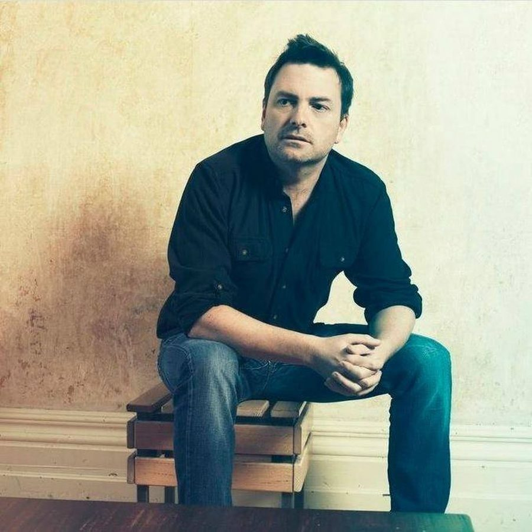

Ivan Gough [Audio]: Back to making records for the clubs


STREAMING AUDIO INTERVIEW
“We made promise to ourselves around six months ago that we’re sticking to now,” veteran Australian DJ/producer Ivan Gough told ITM recently, speaking on his and Grant Smillie’s decision steer their TV Rock project back to making music for the clubs.
“I’ve produced plenty of trance and progressive house in the past, and we’ve more or less decided we want to go back to writing the kind of records we would play in our club sets. If we get one that crosses over to radio then good, but we’re not going to actively seek radio records at this point. We’ve got other artists who are doing that; we’re producing for people like Zoe Badwi and we’ve got other artists coming to the label well known in the pop scene, who’ll be doing more commercial dance.”
The label in question is TV Rock’s new Neon Records project. It’s backed by the industry muscle of Warner Music, and they’ve just launched the first volume one of their mix compilation series Neon Essential which they’ll be touring extensively across the country between now and late June. The label’s first big hit was Sidney Samson’s Riverside, which reigned in the top spot for a massive six weeks. But as Ivan revealed to ITM’s Angus Paterson, TV Rock’s plans with Neon Records are to facilitate plenty of edgy club bangers alongside the radio hits.
ITM is currently offering you the chance to win a trip to Melbourne for a DJ lesson with TV Rock, plus Stanton decks setup to the value of $4,000. Click here to enter and check out some of our other Neon coverage below…
> Neon Essential vol. 1 review
> Interview with Grant Smillie
> TV Rock Neon Photo Shoot - Behind The Scenes
> TV Rock your diary – week 1
> TV Rock your diary – week 2
Neon Essential vol. 1 will be launching at the remaining national shows…
Sat 30th May – Adelaide, HQ feat. TV Rock / Zoe / Chardy
Fri 5th Jun – Wagga Wagga, The Duke Hotel feat. Ivan Gough / Chardy
Fri 5th Jun – Byron Bay, La La Land feat. Grant Smillie / Zoe
Sat 6th Jun – Cairns, Velvet Underground feat. TV Rock
Fri 12th Jun – Coffs Harbour, Plantation Hotel feat. TV Rock
Sat 13th Jun – Sydney, Onelove feat. TV Rock / Zoe / Chardy
Fri 19th Jun – Perth, Limelite feat. TV Rock / Zoe / Chardy
Sat 20th Jun – Gold Coast, Platinum feat. TV Rock / Zoe / Chardy
Fri 26th Jun – Bendigo, Black Swan feat. Chardy / Zoe
Fri 26th Jun – Townsville, The Consortium feat. TV Rock
Sat 27th Jun – Canberra, Academy feat. Chardy / Zoe
Sat 27th Jun – Airlie Beach, Magnums feat. TV Rock